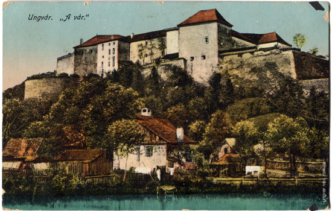

Історія
Рання історія
На території Ужгорода виявлено залишки поселень, найдавніші з яких налічують понад сто тисяч років. Упродовж давніх віків через територію сучасного міста пройшло чимало племен і народів: гуни, авари, бургунди даки, кельти, сармати. Одними з перших відомих засновників ужгородського поселення були білі хорвати, які у другій половині 1-го тисячоліття заселили територію сучасного Ужгорода[4]. Поселення називалося Онґвар (або Унґвар, чи Гунґвар, чи Унґювар). Протягом століть історично склалися три центри міста: Горяни, Замкова гора і Радванка. Горяни — село, нині в складі міста Ужгород.
У складі Угорського королівства (903—1526)
На території Ужгорода виявлено залишки поселень, найдавніші з яких налічують понад сто тисяч років. Упродовж давніх віків через територію сучасного міста пройшло чимало племен і народів: гуни, авари, бургунди даки, кельти, сармати. Одними з перших відомих засновників ужгородського поселення були білі хорвати, які у другій половині 1-го тисячоліття заселили територію сучасного Ужгорода[4]. Поселення називалося Онґвар (або Унґвар, чи Гунґвар, чи Унґювар). Протягом століть історично склалися три центри міста: Горяни, Замкова гора і Радванка. Горяни — село, нині в складі міста Ужгород.
Епоха графів Другетів
У 1318 році місто отримало нових господарів — італійських графів Другетів, які володіли ним протягом 360 років. Філіпп Другет будує нову кам'яну фортецю на місці сучасного замку.
Ужгородський замок
Історія власне середньовічного замку налічує понад тисячу років. Упродовж століть замок неодноразово перебудовувався згідно з вимогами фортифікації середньовіччя. До наших днів від найдревніших споруд його збереглась лише частина фундаменту, сліди якого можна бачити в підземеллях, а також фрагменти карнизів з романським орнаментом. Основна споруда належить до XIV ст. Наприкінці X — на початку XI століття, коли рівнинна частина Закарпаття підпала під владу Угорського королівства, в Ужгороді будується кам'яний замок як адміністративний центр комітату Унг. Це вже була могутня оборонна споруда, про силу якої свідчить той факт, що 1086 року під час набігу половецької орди під верховодством хана Кутеска, яка прорвалась через Карпатські перевали до Дунайської низовини, Ужгородський замок кочівники взяти не змогли. У період, коли замок перебував у володінні роду Другетів (1322—1691 роки), у фортифікаційному мистецтві відбувалися великі зміни, викликані головним чином появою нових видів зброї, насамперед вогнепальної зброї. Це все вимагало докорінної реконструкції замку, яка була здійснена наприкінці XVI століття з використанням найновітніших досягнень фортифікаційного мистецтва Європи. В Ужгородському замку за проєктом італійських інженерів було проведено певну реконструкцію з метою посилення його обороноздатності — було вимурувано міцніші стіни на певній відстані від палацу, на кожному розі споруджено ромбоподібний бастіон, висунутий за лінію квадрата стін, які ми бачимо ще й сьогодні, що значно посилювало ефективність оборони замку з допомогою артилерії, встановленої на майданчиках бастіонів. Над входом у замковий палац у вигляді барельєфа витиснено на кам'яній плиті чотири дрозди — герб Другетів. Замок має форму неправильного чотирикутника з бастіоном на кожному розі. Бастіони виступають трохи вперед, що дало можливість успішно вести фланговий бій. На бастіонах, висота яких досягає 10—15 м, розміщувалися гармати, які тримали під обстрілом підступи до замку. Для посилення міцності бастіонів роги їх викладено квадратами з білого каменю. Замок здається майже неприступним. Неприступність його особливо підкреслено з північної сторони масивною гладдю високих стін, позбавлених навіть бійниць. Стіни побудовано в основному з каменю. Північну частину замку захищав кільоподібний бастіон. З трьох сторін замок оточує глибокий рів (8—10 м), через який було перекинуто підіймальний міст. До наших днів збереглися створи для ланцюгів, за допомогою яких міст піднімався.

Замкова гора. Поштівка, 1918 рік.
Навпроти головних в'їзних воріт, на північно-східній частині Замкової гори, на краю крутого схилу, стоїть замковий палац — сувора двоповерхова будова прямокутної форми з XVI століття, на кожному розі якої квадратна вежа. На верхньому поверсі веж, товщина стін яких сягає 2,5—3 м, видно темні отвори бійниць. У фортифікаційній системі замку палац, він же цитадель, займав панівне становище. У разі проникнення ворога на подвір'я замку, захисники його могли успішно продовжувати оборону з палацу, в якого була добре продумана система оборони — з трьох боків палац був оточений глибоким ровом, через який у східній частині було перекинуто підіймальний міст, який у разі підйому зачиняв отвір воріт. При спорудженні замкового палацу будівельники врахували рельєф місцевості, якому в фортифікаційній системі палацу відводилась важлива роль — сам палац є ніби продовженням схилу Замкової гори, на якому він стоїть. Північну частину палацу споруджено прямо над прірвою, схил настільки стрімкий, що ворог жодного разу не насмілювався штурмувати замок з північного боку. В замковому палаці є просторі підземні каземати, які в мирний час служили коморами, а під час облоги замку — сховом. У підземеллі була також в'язниця та камера катувань. Фасади декоровано
білокам'яним ренесансним обрамленням, що частково збереглось до наших днів. Палац має внутрішній затишний дворик, де розміщувався колодязь, видовбаний у скелі, воду якого захисники замку вживали під час тривалих облог. У товстих стінах палацу є таємні ходи, якими можна було потрапити з одного поверху на інший непоміченим. Легенда розповідає і про таємний хід, який з'єднував замок із зовнішнім світом. 1775 року замок було передано імператрицею Марією-Терезією Мукачівській єпархії. У цей період триває незначна перебудова замку, внаслідок якої знищують лицарський зал. Нині у замку розміщується краєзнавчий музей. Разом із замком розбудовувалось і місто. У 1384 році завершилося будівництво нового замку, а також відкрито першу в місті школу. Уже 1430 року Ужгород отримує привілеї від короля й офіційно пишеться як «Привілейоване місто Ужгород». У 1514 році під час великого повстання під проводом Дєрдя Дожі місто було повністю зруйновано. Після поразки угорців у битві з турками в 1526 році біля Могача Угорське королівство було розділено на три частини одна з яких Трансільванське князівство, друга — центральна Угорщина під владою турків, третя західна та північна Угорщина під владою австрійських Габсбургів. Місто Ужгород на тривалий час стає ареною міжусобних боїв. Так, 1538 року Ужгород відійшов до Трансільванії, а вже 1540 року його захопили австрійські війська. У 1564 році місто знову було атаковано трансільванськими військами. Нові господарі графи Другети зміцнили роль міста, як економічного та торговельного центру. У цей час відбуваються перебудова замку та будівництво нових церков. Збереглася з того часу і печатка з написом «Печатка міста Ужгорода. 1675 рік», на якій зображено герб міста: щит із двома виноградними лозами, а на них три листки і два ґрона винограду, що вказувало на основне заняття його мешканців. Цей герб існував майже без змін до 1918 року. (мінялася лише барва щитового тла — у XVII—XVIII століттях щит герба був блакитним, у XIX столітті — червоним; на початку XX століття було відновлено давніший варіант із блакитним щитом). У 1631 році у місті було 10 вулиць, 206 кріпосницьких дворів, 32 дворянські маєтки; а загальна кількість жителів — 1200 осіб. Протягом XVI—XVII століть в Ужгороді існувало багато ремісничих цехів: шевський, гончарний, столярний, бондарний. У цей період місто було втягнуто в релігійну боротьбу між реформатською Трансильванією і католицькою Австрією. У 1610 році в місті домінувала католицька церква. У 1619 році Ужгород знову захоплюють протестантські війська Трансильванії. Після десятилітнього правління реформатської влади в місто повернулися католики на чолі з графом Другетом. Саме в цьому році, 1646, в Ужгородському замку було зібрано 63 православних священиків і під егідою Ватикану проголошено Ужгородську унію та утворено греко-католицьку церкву на Закарпатті. В листопаді—грудні 1648 року, під час Національно-визвольної війни, козаки Богдана Хмельницького здійснили рейд через Карпати за межі Речі Посполитої — в українське Закарпаття, що було під контролем Трансільванії, де були на деякий час взяті околиці Ужгорода.
Визвольна війна під проводом Ференца II Ракоці
У 1707 році Ужгород був резиденцією керівника національно-визвольної війни угорського народу Ференца II Ракоці[4]. Взагалі, Ужгород XVIII століття славився своїми ярмарками. Сюди приїжджали купці зі Словаччини, Німеччини, Угорщини, Молдови, Польщі, Греції, Росії. У цей час було збудовано цілу низку винних підвалів і складів у районі Замкової та Дайбовецької гір. Наприкінці XVIII століття починає розбудовуватися і лівобережна частина міста, де селилися бідняки. А ось для початку XIX століття характерний економічний розмах. На Закарпатті почав розвиватися капіталізм, хоча і в рамках феодалізму, з'явилися перші фабрики, внаслідок чого площа міста значно збільшилась. У 1837 році в Ужгороді налічувалося 36 вулиць.